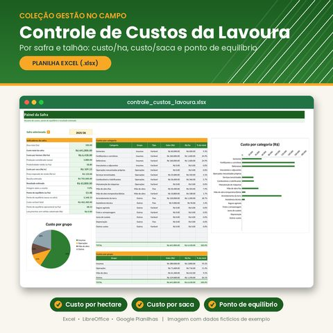

Controle de Custos da Lavoura
Por safra e talhão. Saiba quanto custa produzir cada hectare e cada saca da sua lavoura.
Benefícios
- Registre insumos, operações, mão de obra e demais gastos e veja na hora o custo por hectare e o custo por saca de cada talhão.
- Descubra o ponto de equilíbrio: quantas sacas por hectare pagam a safra e qual o preço mínimo de venda para não ter prejuízo.
- Gastos gerais (salário fixo, diesel, assistência técnica) rateados automaticamente entre os talhões pela área.
Ver mais benefícios
- Painel com indicadores e gráficos por grupo e por categoria de custo, com escolha da safra numa lista.
- Fórmulas protegidas e listas suspensas que evitam erros de digitação, sem precisar saber Excel avançado.
O que vem incluso
- Arquivo controle_custos_lavoura.xlsx
- Abas: Como usar, Painel, Config (safras, preços e 17 categorias editáveis), Talhões e Lançamentos (1.000 linhas)
- Aba Exemplo preenchida com dados fictícios
- Feita para o Microsoft Excel (testada também no LibreOffice Calc)
R$ 27,00pagamento único
Comprar
Pagamento seguro pelo Stripe, no cartão. O download da planilha é liberado logo após o pagamento.